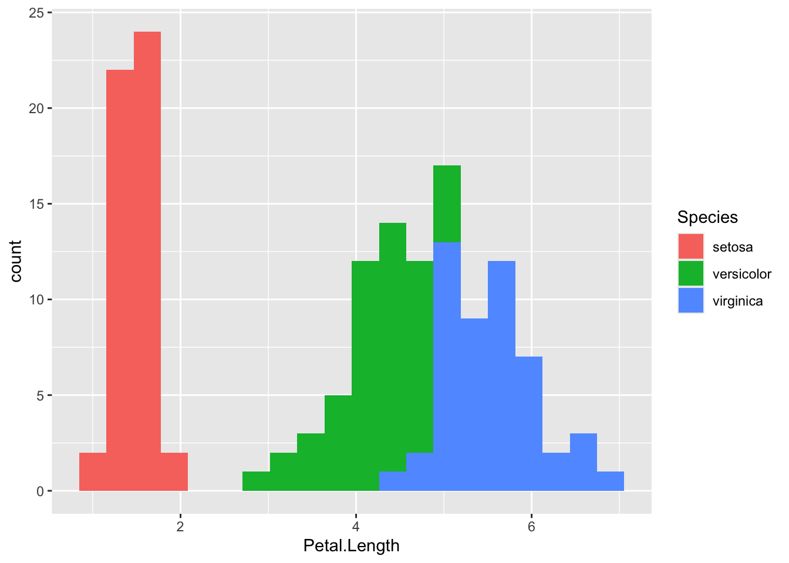
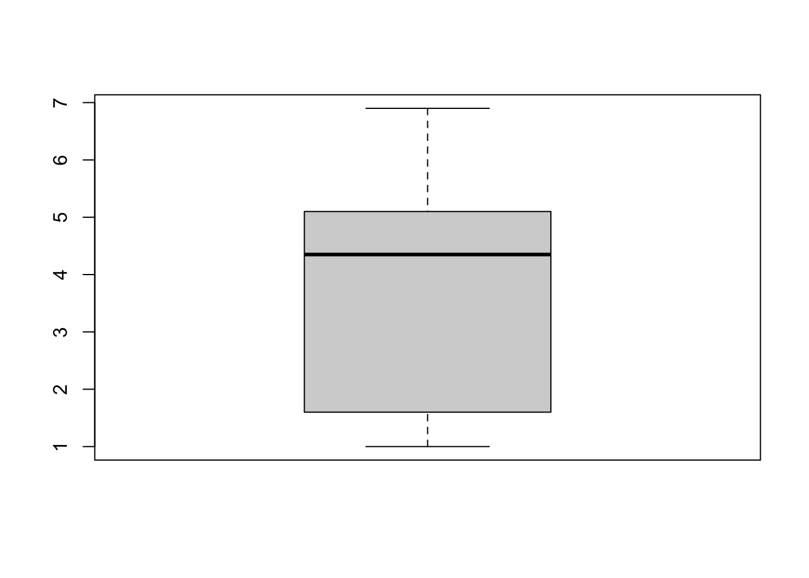
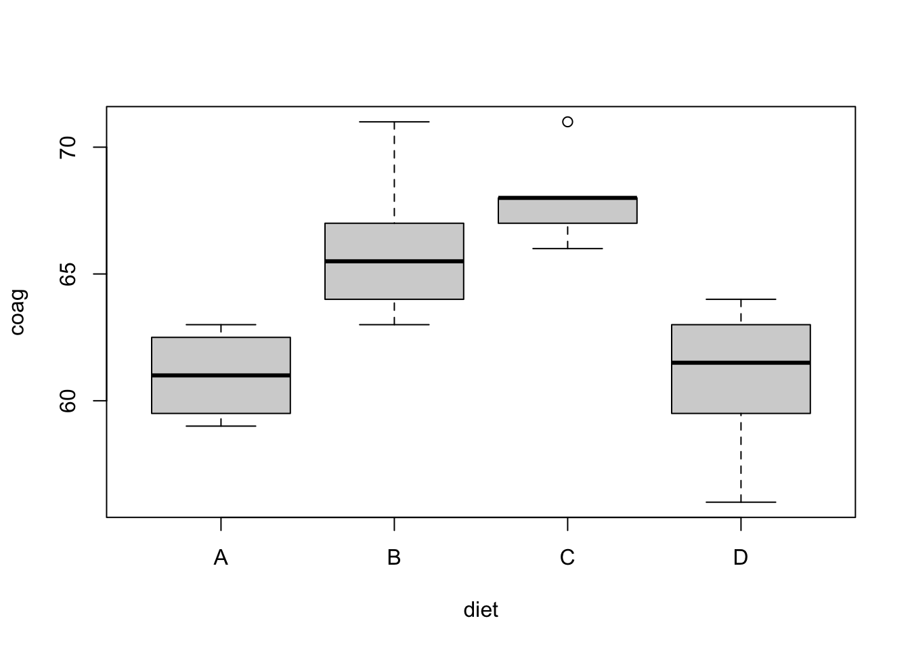
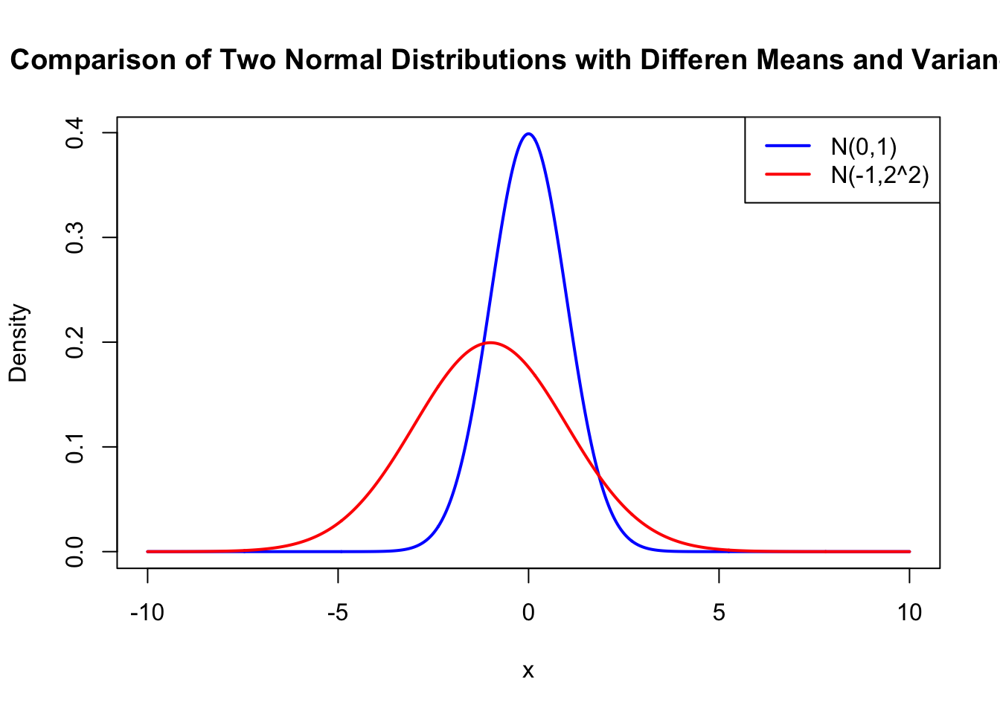
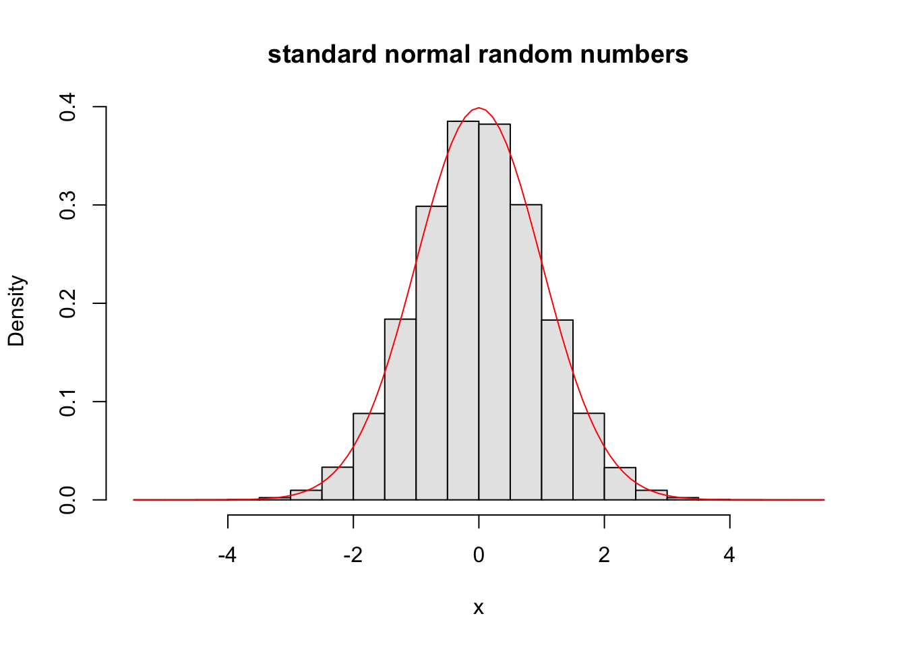
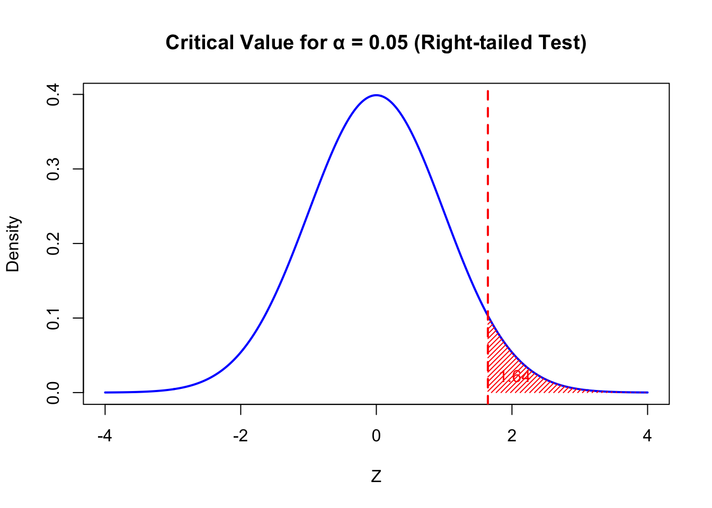
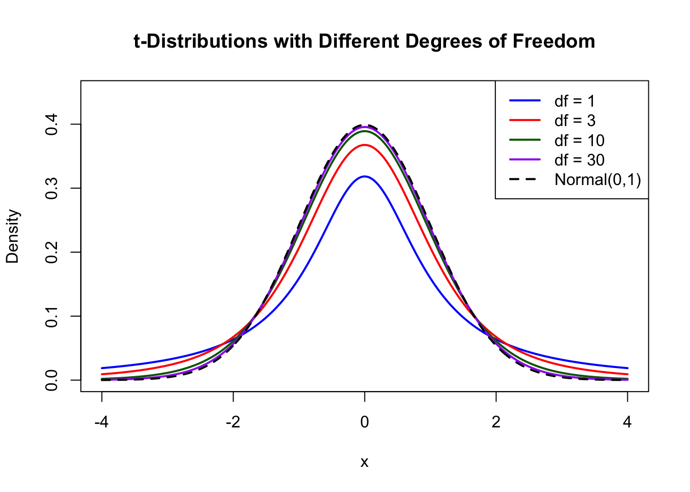
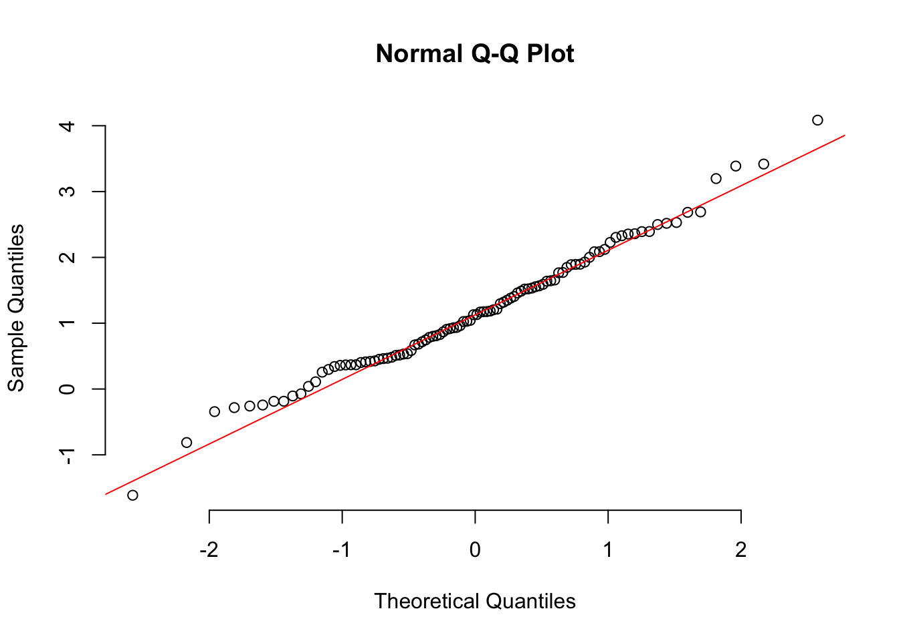
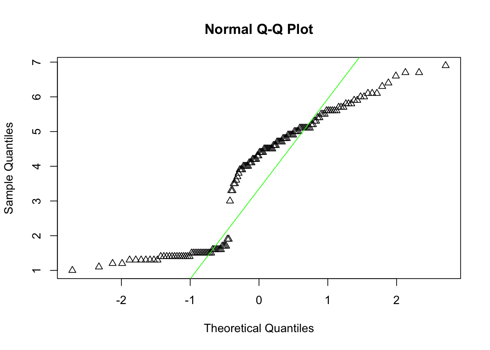
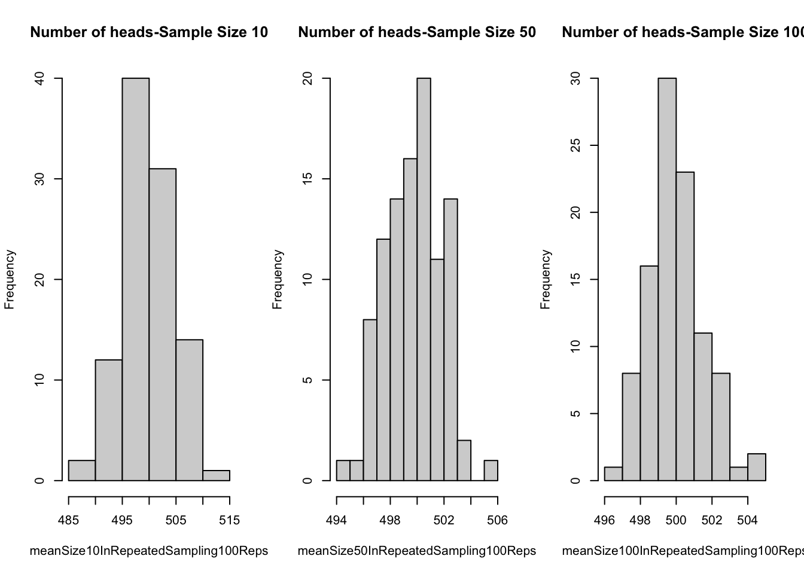

Min. 1st Qu. Median Mean 3rd Qu. Max.
4.300 5.100 5.800 5.843 6.400 7.900 Week 8: Midterm Review
Outline
- Population and Sample
- Descriptive Statistics
- Histogram and Boxplot
- Normal Distribution and t distribution
- Central Limit Theorem
- Confidence Interval
- Hypothesis Testing and t-test
Population and Sample
Population: the entire group of individuals that we want information about.
Sample: a part of the population that we actually examine in order to gather information about the whole population.
Example:
Population: Illinois Tech students
Sample: Students in our class
Types of statistics:
Descriptive statistics: utilizes numerical and graphical methods to look for patterns in a data set, to summarize the information revealed in a data set, and to present the information in a convenient form.
Inferential statistics: use a fact about a sample to estimate the truth about the whole population.
Descriptive Statistics
Consider a quantitative data set with \(n\) observations, denoted as \(\{x_1,\cdots,x_n\}\).
Location Measures
- Sample Mean: arithmetic average, denoted by \(\bar{x}\)
\[\bar{x} = \frac{x_1+\cdots+x_n}{n} = \frac{1}{n}\sum\limits_{i=1}^n x_i=\frac{1}{n}\sum x_i.\]
The corresponding population parameter is population mean, denoted by \(\mu\).
- Sample median: middle number when the observations are arranged in ascending order, noted by \(\tilde{x}\)
\[ \tilde{x} = \begin{cases} x_{(n+1)/2}, & \text{ if } n \text{ is odd,} \\ \frac{1}{2}(x_{n/2} + x_{n/2+1}), & \text{ if } n \text{ is even.} \end{cases} \]
Note: Median is less sensitive than mean to extremely large or small observations, which is good.
Variability Measures
Sample range: measure of variability, \(x_{\max} -x_{\min}\)
Sample variance: measure of variability, spread out, denoted by \(s^2\)
\[s^2 = \frac{(x_1-\bar{x})^2+\cdots+(x_n-\bar{x})^2}{n-1} = \frac{\sum\limits_{i=1}^n (x_i-\bar{x})^2}{n-1} \]
The corresponding population parameter is population variance, denoted as \(\sigma^2\).
Sample standard deviation: \(s = \sqrt{s^2}\), common way for measuring how far observations are away from the mean.
The corresponding population parameter is the population standard deviation, denoted as \(\sigma\).
Variance and standard deviation are as follows
var(iris$Sepal.Length) [1] 0.6856935sd(iris$Sepal.Length) [1] 0.8280661Practice
In a study conducted by the Department of Mechanical Engineering at Illinois Tech, the steel rods supplied by two different companies were compared. Five sample springs were made out of the steel rods supplied by each company, and a measure of flexibility was recorded for each. The data are as follows: \[\begin{align*} \text{ Company A: } & \begin{matrix} 9.8 & 8.3 & 6.7 & 8.8 & 8.7 \end{matrix}\\ \text{ Company B: } & \begin{matrix} 11.8 & 10.1 & 9.2 & 10.9 & 10.7 \end{matrix} \end{align*}\]
Calculate the sample mean and median for the data for the two companies.
Compute the variance and standard deviation for both company A and company B.
Based on the results of the mean and the variance in flexibility for both companies, does there appear to be a difference in flexibility between company A and company B? Explain your answer.
Histogram and Boxplot
Histogram
Graphically displays the contents in the frequency table
The class intervals in the frequency table form the scale of the horizontal axis.
A vertical bar is placed over each class interval, with height equal to either the class frequency or class relative frequency.
Used to plot the density of the data
Practice
The following is an overlay histogram of Petal.Length in iris dataset. What conclusions can you draw?

Boxplot
Graphically depicting groups of numerical data through their quantiles.

first quantile (Q1/25th Percentile): the middle number between the smallest number (not the “minimum”) and the median of the dataset.
third quantile (Q3/75th Percentile): the middle value between the median and the highest value (not the “maximum”) of the dataset.
interquartile range (IQR): 25th to the 75th percentile.
“maximum”: Q3 + 1.5*IQR
“minimum”: Q1 -1.5*IQR
Practice
What conclusion can you draw from the following boxplot?

Normal Distribution and t-distribution
Normal Distribution
The normal distribution (also be called Gaussian distribution) is a symmetric distribution that is centered around a mean and spreads out in both directions.
- Notation: \(X\sim N(\mu, \sigma^2)\)
- \(\mu\) is the mean of the distribution
- \(\sigma^2\) is the variance of the distribution
- X can take any value on the real line.

Generally, we use \(Z\) denote the standard normal random variable, i.e., \(Z \sim N(0, 1).\)

Critical value \(z_{\alpha}\) of a standard normal distribution is the value on the measurement axis for which \(\alpha\) of the are under the standard normal curve lies to the right of \(z_{\alpha}\), i.e. \(P(Z < z_{\alpha}) = 1-\alpha.\)
Here, \(\alpha = 0.05\).

The \(t\) Distribution
Let \(X_1, X_2,...,X_n\) is a random sample from a distribution \(N(\mu, \sigma^2)\) and \[ \bar{X} = \frac{1}{n}\sum_{i=1}^n X_i, \qquad S^2 = \frac{1}{n-1}\sum_{i=1}^n (X_i-\bar{X})^2.\] Then the random variable \[T = \frac{\bar{X}-\mu}{S/\sqrt{n}}\] has the \(t\) distribution with \(v = n-1\) degrees of freedom, denoted as \(t_{n-1}\).
Remark: The \(t\)-distribution can still be used even if the population distribution is not normal, as long as
- the sample size \(n\) is large.
- the population distribution is not too-skewed.
The following is the graph of the pdf of \(t\) distribution with different degrees of freedom. As the degrees of freedom \(v\) gets large, the pdf gets closer to normal curve.

Practice
To find a confidence interval on population mean when population variance is known, which of the following should we use? (In this part, suppose \(X_1\), … , \(X_{30}\) is a random sample (of size 30) from some unknown distribution.)
A. The normal distribution (with the Z statistic)
B. The normal distribution (with the Z statistic), but ONLY if X comes from a normal distribution
C. The t-distribution (with the T statistic)
D. The t-distribution (with the T statistic), but ONLY if X comes from a normal distribution
To find a confidence interval on population mean when population variance is unknown, which of the following should we use? (In this part, suppose \(X_1\), … , \(X_{20}\) is a random sample (of size 20) from some unknown distribution.)
A. The normal distribution (with the Z statistic)
B. The normal distribution (with the Z statistic), but ONLY if X comes from a normal distribution
C. The t-distribution (with the T statistic)
D. The t-distribution (with the T statistic), but ONLY if X comes from a normal distribution
Based on the following qqplots, do the variables follow the normal distribution?


Central Limit Theorem
The Central Limit Theorem (CLT) states that if random samples of size \(n\) are drawn from a large population and \(n\) is large enough, then the sampling distribution of the sample mean will follow approximately a normal distribution. The CLT also applies to proportions since a proportion can be expressed as the mean of zeros and ones.
Number of Heads Experiements
We want to investigate a random variable \(X\), the number of heads in 1000 coin flips, follows the Binomial distributions with \(n=1000\) and \(p =0.5\). We know \(E(X) = 500\). Let’s investigate the sampling distribution of sample means with sample size \(10, 50,\) and \(100\).
n<- 1000
p <- 0.5
meanSize10InRepeatedSampling100Reps<-replicate(100, mean(rbinom(10, n, p)))
meanSize50InRepeatedSampling100Reps<-replicate(100, mean(rbinom(50,n , p)))
meanSize100InRepeatedSampling100Reps<-replicate(100, mean(rbinom(100, n, p)))
par(mfrow=c(1,3))
hist(meanSize10InRepeatedSampling100Reps,main = paste("Number of heads-Sample Size 10"))
hist(meanSize50InRepeatedSampling100Reps,main = paste("Number of heads-Sample Size 50"))
hist(meanSize100InRepeatedSampling100Reps,main = paste("Number of heads-Sample Size 100"))
As we will see, as the sample size increases, the distribution more closely follows a normal distribution. How large a sample needs to be will depend on the situation.
Note
The Central Limit Theorem is a result about the sampling distribution of a mean. Knowing when the sampling distribution of a sample mean follows approximately a normal distribution is useful for making inferences about population means.
The sample size needs to be sufficiently large for the CLT to apply.
Confidence Interval
Confidence Interval on \(\mu\)
- When \(\sigma^2\) Known
Suppose \(z_{\alpha/2}\) denote the value such that \[P(-z_{\alpha/2} < \frac{\bar{X}-\mu}{\sigma/\sqrt{n}} <z_{\alpha/2}) = 1- \alpha.\]
If \(\bar{x}\) is the mean of a random sample of size \(n\) from a population with known variance \(\sigma^2\), a \(100(1-\alpha)\%\) confidence interval for \(\mu\) is given by \[ \bar{x} - z_{\alpha/2} \frac{\sigma}{\sqrt{n}} < \mu < \bar{x} + z_{\alpha/2} \frac{\sigma}{\sqrt{n}},\] where \(z_{\alpha/2}\) is the z-value leaving an area of \(\alpha/2\) to the right.
- When \(\sigma^2\) Unknown
If the population follows normal distribution or approximately normal distribution, we can use \(t-\)distribution. Suppose \(t_{\alpha/2}\) denote the value such that \[P(-t_{\alpha/2} < \frac{\bar{X}-\mu}{s/\sqrt{n}} <t_{\alpha/2}) = 1- \alpha.\]
If \(\bar{x}\) and \(s\) are the mean and the standard deviation of a random sample of size \(n\) from a distribution with unknown variance \(\sigma^2\), a \(100(1-\alpha)\%\) confidence interval for \(\mu\) is given by \[ \bar{x} - t_{\alpha/2,n-1}\frac{s}{\sqrt{n}} < \mu < \bar{x} + t_{\alpha/2,n-1}\frac{s}{\sqrt{n}},\] where \(t_{\alpha/2}\) is the \(t-\)value with \(v =n-1\) degrees of freedom, leaving an area of \(\alpha/2\) to the right.
Hint Do we know the population variance? If yes, we should use \(z\); if not, we should use \(t\).
Practice
- An electrical firm manufactures light bulbs that have a length of life that is approximately normally distributed with a standard deviation of 40 hours. If a sample of 30 bulbs has an average life of 780 hours, find a 96% confidence interval for the population mean of all bulbs produced by this firm.
Note: Here we have population standard deviation \(\sigma = 40\). This means we should use \(z\) value to construct the confidence interval. Here we want to construct a 96% confidence interval. That is \(\alpha = 1-0.96 = 0.04\). We need \(z_{\alpha/2} =z_{0.02}\).
- A random sample of 12 shearing pins is taken in a study of the Rockwell hardness of the pin head. Measurements on the Rockwell hardness are made for each of the 12, yielding an average value of 48.50 with a sample standard deviation of 1.5. Assuming the measurements to be normally distributed, construct a 90% confidence interval for the mean Rockwell hardness.
Note: Here we don’t have population standard deviation. This means we should use \(t\) value to construct the confidence interval. Here we want to construct a 90% confidence interval. That is \(\alpha = 1-0.9 = 0.1\). We need \(t_{v,\alpha/2} =t_{11,0.05}\).
- Match the description with the appropriate terms
Marathon Finish Times
Researchers examined marathon finish times for amateur runners.
Terms: Inferential statistic, Descriptive statistic, Population, Parameter, Sample
Descriptions:
All amateur marathon runners worldwide
The 150 runners randomly selected from the Chicago Marathon
The mean finish time of the 150 runners, ${x} = 4.1 $ hours
The true mean finish time for all amateur marathon runners worldwide, $$
A 95% confidence interval for the mean finish time, (3.9, 4.3) hours
Hypothesis Testing
A hypothesis test is a method for evaluating a claim, or hypothesis, about a population parameter by examining the statistical evidence against the claim based on a sample. The conclusion of a hypothesis test is a decision that the observed data either indicate the claim is plausible or support an alternative explanation. The following steps outline the general process of conducting a hypothesis test.
State null and alternative hypotheses about parameters. The null hypothesis, \(H_0\) , is typically the by-chance or no-effect explanation, and the alternative hypothesis,\(H_1\), is typically the explanation of an effect, or difference.
Calculate a statistic of interest from the sample data that is used to evaluate the null hypothesis.
Determine the p-value, or likelihood, of obtaining a statistic at least as extreme as the observed statistic when the null hypothesis is true.
Draw a conclusion about the null hypothesis based on the statistical evidence provided by the p-value.
For the one-sample two-sided hypothesis \[\begin{align*} H_0: \mu = \mu_0,\\ H_1: \mu \ne \mu_0. \end{align*}\]
For the two-sample two-sided hypothesis \[\begin{align*} H_0: \mu_1 = \mu_2,\\ H_1: \mu_2 \ne \mu_2. \end{align*}\]
Practice
Because the p-value is very small, the decision from the hypothesis test is to _____.
reject the null hypothesis
fail to reject the null hypothesis
reject the alternative hypothesis
Type I and type II errors
The decision from a hypothesis test is to either reject the null hypothesis or fail to reject the null hypothesis. The significance level, \(\alpha\) , of a hypothesis test is how small the p-value must be to conclude the data provide enough statistical evidence to reject the null hypothesis. The decision is to reject the null hypothesis if the p-value is less than or equal to \(\alpha\), and fail to reject the null hypothesis if the p-value is greater than \(\alpha\).
A type I error is rejecting the null hypothesis in favor of the alternative when in reality the null hypothesis is true.
A type II error is failing to reject the null hypothesis when in reality the alternative hypothesis is true.
\[ \begin{array}{ccc} \hline & H_0 \text{ is true} & H_0 \text{ is false} \\ \hline \text{Do not reject } H_0 & \text{Correct decision} & \text{Type II error} \\ \text{Reject } H_0 & \text{Type I error} & \text{Correct decision} \\ \hline \end{array} \]
Practice
What can you tell from the outputs below?
Two Sample t-test
data: sample1 and sample2
t = -2.6191, df = 18, p-value = 0.01739
alternative hypothesis: true difference in means is not equal to 0
99 percent confidence interval:
-0.34843753 0.01643753
sample estimates:
mean of x mean of y
0.399 0.565
Welch Two Sample t-test
data: sample1 and sample2
t = -2.6191, df = 11.673, p-value = 0.02286
alternative hypothesis: true difference in means is not equal to 0
95 percent confidence interval:
-0.30452438 -0.02747562
sample estimates:
mean of x mean of y
0.399 0.565 Practice: Match the Terms
An electronics manufacturer wants to ensure its new battery lasts at least 12 hours on average under standard usage. They conduct a test on sample devices to verify the claim.
Match each description with the appropriate term.
Terms: Hypotheses; Type I error; Type II error; Type I error consequence; Type II error consequence
Description:
\(H_0: \mu = 12, H_1: \mu < 12\)
Concluding that the batteries last less than 12 hours when they actually meet the 12-hour standard.
Delaying product release and spending more on design changes when the product already meets the goal.
Concluding that the batteries meet the 12-hour standard when they actually last less than 12 hours.
Launching the product and facing customer complaints about short battery life.